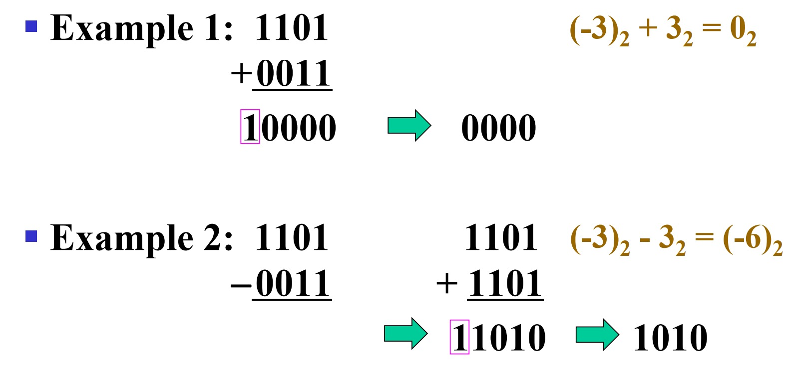
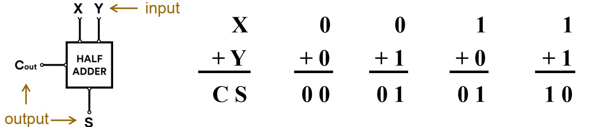
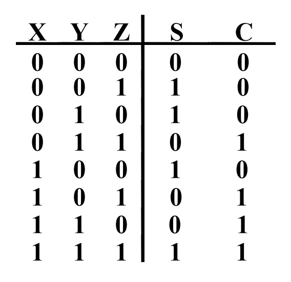
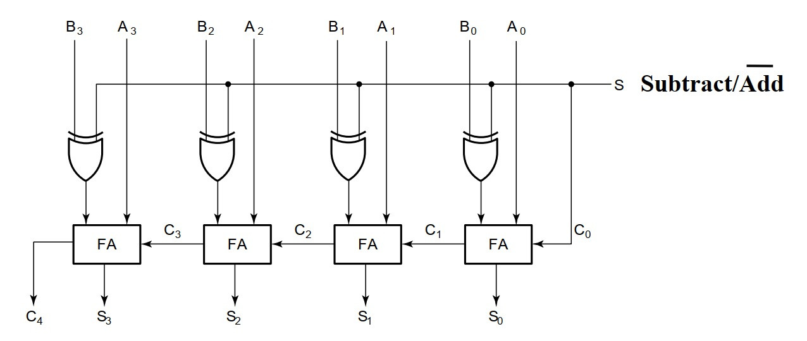

LCDF¶
Week 6: Combinational Logic Design¶
Part 1¶
Arithmetic Functions¶
Unsigned Subtraction¶
-
Algorithm:
-
Subtract the subtrahend N from the minuend M (M-N)
-
If no borrow occurs, then M \(\ge\) N, and the result is a non-negative number and correct.
-
If an borrow occurs, then N > M, and the difference M - N + \(2^n\) is subtracted from \(2^n\), the result must be negative, and so we need to correct its magnitude.
-
Subtracting the preceding formula from \(2^n\):
\(2^n-(M-N+2^n)=N-M\)
-
a minus sign should be appended to the result.
-
Examples: \(1001_2-0111_2\), \(0100_2-0111_2\)
Problem: To do both unsigned addition and unsigned subtraction is quite complex!¶

Goal: To find shared simpler logic for both addition and subtraction¶
Complements¶
- Two complements:
- Radix Complement
- r's complement for radix r
- 2's complement in binary
- Defined as \(r^n-N\)
- Diminished Radix Complement of N
- (r-1)'s complement for radix r
- 1's complement in binary
- Defined as \((r^n-1)-N\)
- Subtraction is done by adding the complement of the subtrahend
- If the result is negative, takes its 2's complement
Binary 1's Complement¶
- For \(r = 2\), \(N = 01110011_2\), \(n=8\):
\(r^n-1=2^8-1=11111111_2\)
- The 1's complement of \(01110011_2\) is then:
\(11111111_2-01110011_2=10001100_2\)
- Since the \(2^n-1\) factor consists of all 1's and since \(1-0=1\) and \(1-1=0\), the one's complement is obtained by complementing each individual bit (bitwise NOT)
Binary 2's Complement¶
- For \(r=2\), \(N=01110011_2\),\(n=8\):
\(r^n=100000000_2\)
- The 2's complement of 01110011 is then:
\(100000000_2-01110011_2=10001101_2\)
- Note the result is the 1's complement plus 1, a fact that can be used in designing hardware
Alternative 2's Complement Method¶
-
Given an n-bit binary number, beginning at the least significant bit and proceeding upward:
-
Copy all least significant 0's
- Copy the first 1
-
Complement all bits thereafter
-
Example: 2's Complement of 10010100
10010100 \(\rightarrow\) 01101100
Subtraction with 2's Complement¶
-
For n-digit, unsigned numbers M and N, find M - N in base 2:
-
Add the 2's complement of the subtrahend N to the minuend M:
\(M+(2^n-N)=M-N+2^n\)
-
If M \(\ge\) N, the sum produces end carry \(r^n\) which is discarded; from above, M - N remains.
-
if M \(\lt\) N, the sum does not produce end carry, and from above, is equal to \(2^n-(N-M)\), the 2's complement of \((N-M)\).
-
To obtain the result \(-(N-M)\), take the 2's complement of the sum and place a "-" to its left.
-
Examples: \(01010100_2-01000011_2\), \(01000011_2-01010100_2\)
Converting Signed Integer to Signed 2's Complement¶
- Converting signed integer to signed 2's complement:
- Positive: all positive numbers in 2's complement are the same as they would be in unsigned binary
- Negative: two steps for conversion
- Find the binary representation of the absolute value of the number
- Find the 2's complement
- Example: convert -7 to a 4-bit signed-complement
- absolute value: 0111
- 2's complement: 1001
Converting Signed 2's Complement to Signed Integer¶
- Converting signed 2's complement to signed integer:
- Positive: treat it as an unsigned binary number and convert normally
- Negative: three steps for conversion
- Find the 2's complement
- Find the absolute value of the number
- Append a minus sign
- Example: Convert 10011 to a signed integer
- 2's complement: 01101
- absolute value: 13
- append a minus sign: -13
Converting Signed 2's Complement to Signed Integer (Cont.)¶
-
An alternative method to convert signed 2's complement is negative weighting:
-
the most significant bit has negative weight \(-2^{n-1}\)
-
other bits hold positive weights as usual, then value of X is
\(X=-2^{n-1}\cdot{B_{n-1}}+\Sigma_{i=0}^{n-2}\ 2^i\cdot{B_i}\)
-
A simple formulation for negative weighting
- Positive: value of \(X = -2^{n-1}\cdot0+\Sigma_{i=0}^{n-2}\ 2^i\cdot{B_{i}}\)
- Negative: value of \(X=-(2^n-X)=-2^n+X=-2^n+2^{n-1}+\Sigma_{i=0}^{n-2}\ w_i\cdot{B_i}=-2^{n-1}+\Sigma_{i=0}^{n-2}\ w_i\cdot{B_i}\)
-
Example: convert 10011 to a signed integer
\(X=-2^4+2^1+2^0=-13\)
Sign extension¶
-
Sign extension preserves value in 2's complement.
-
Adding leading zeros to a positive number, and leading ones to a negative number, is called sign extension of a 2's complement number
-
e.g., 0111 \(\rightarrow\) 0000111, 1011 \(\rightarrow\) 1111011
-
A simple formulation for negative integers
-
e.g. sign extension from n-bit to m-bit (m \(\gt\) n)
\(X_m = -2^{m-1}+2^{m-2}+\dots+2^{n-1}+\Sigma_{i=0}^{n-2}\ w_i\cdot{B_i}\)
\(= -2^{m-2}+2^{m-3}+\dots+2^{n-1}+\Sigma_{i=0}^{n-2}\ w_i\cdot{B_i}\)
\(\dots\)
\(= -2^{n-1}+ \Sigma_{i=0}^{n-2}\ w_i\cdot{B_i}\)
\(=X_n\)
Overflow & Underflow¶
-
In 2's complemment, carry out does not indicate an overflow
-
The range of an n-bit 2's complement
-
upper bound: \(\Sigma_{i=0}^{n-2}\ w_i\cdot{B_i}\)
-
lower bound: \(-2^{n-1}\)
-
Examples:

Signed-Magnitude Arithmetic¶
- Operator: +/0, -/1, Operand-1: sign bit, Operand-2: sign bit
- If the parity of the three signs is 0:
- Add the magnitudes.
- Check for overflow.
- The sign of the result is the same as the sign of the first operand.
- If the parity of three signs is 1:
- Subtract the second magnitude from the first.
- If a borrow occurs:
- Take the 2's complement of result
- and make the result sign the complement of sign of the first operand.
- If a borrow doesn't occur, the sign of the result is the same as the sign of the first operand.
- Overflow will never occur.
Signed-Magnitude Arithmetic Examples¶

Signed-Complement Arithmetic¶
- Addition:
- Add the numbers including the sign bits, discarding a carry out of the sign bits (2's Complement).
- If the sign bits were the same for both numbers and the sign of the result is different, an overflow has occurred.
- The sign of the result is computed in step 1.
- Subtraction:
- Form the complement of the number you are subtracting and follow the rules for addition
Signed 2's Complement Examples¶

Functional Blocks: Addition¶
- Binary addition used frequently
- Addition Development:
- Half-Adder: a 2-input bit-wise addition functional block
- Full-Adder: a 3-input bit-wise addition functional block
- Ripple Carry Adder, an iterative array to perform binary addition
- Carry-Look-Ahead Adder, a hierarchical structure to improve performance.
Function Blocks: Half-Adder¶
- A 2-input, 1-bit width binary adder that performs the following computations:

- A half adder adds two bits and produces a two-bit sum.
- In essence, a half adder is a 2-to-2 decoder.
The truth table of Half-Adder¶

Implementations: Half-Adder¶

Functional Block: Full-Adder¶
- A full adder is similar to a half adder, but includes a carry-in bit from lower stages. Like the half adder, it computes a sum bit, S and a carry bit, C.

The truth table of Full-Adder¶

Equations: Full-Adder¶
- From the K-map, we get:
\(S=X\bar{Y}\bar{Z}+\bar{X}Y\bar{Z}+\bar{X}\bar{Y}Z+XYZ=X\oplus{Y}\oplus{Z}\)
\(C=XY+XZ+YZ=XY+(X\oplus{Y})Z\)
-
The term \(X\cdot{Y}\) is carry generate.
-
The term \(X\oplus{Y}\) is carry propagate.
Implementations: Full-Adder¶

4-bit Ripple-Carry Binary Adder¶
A four-bit Ripple Carry Adder made from four 1-bit Full Adders:¶

Carry Lookahead Development¶
- Beginning at the cell 0 with carry in \(C_0\):
\(C_1=G_0+P_0C_0\)
\(C_2=G_1+P_1G_0+P_1P_0C_0\)
\(C_3=G_2+P_2G_1+P_2P_1G_0+P_2P_1P_0C_0\)
\(C_4=G_3+P_3G_2+P_3P_2G_1+P_3P_2P_1G_0+P_3P_2P_1P_0C_0\)
- By using these formulas, time complexity of the adders can be improved from O(n) to O(1).
Implementation: Carry Lookahead¶

2's Complement Adder/Subtractor¶
-
For S = 0, add, B is passed through unchanged.
-
For S = 1, subtract, the 2's complement of B is formed by using XORs to form the 1's complement and adding the 1 applied to \(C_0\)
